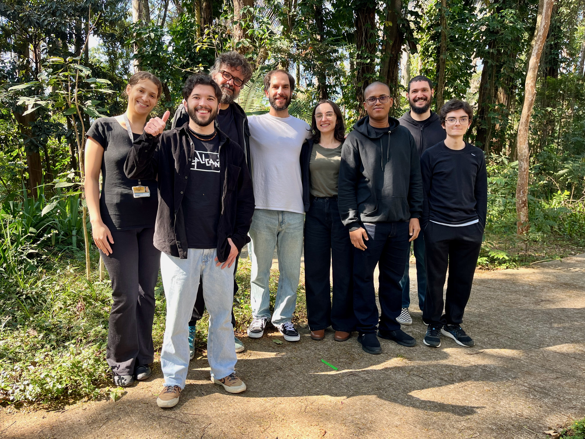

selection
presaccadic perception
how visual sensitivity and neural representations change at the future point of fixation before saccades.
visual neuroscience · são paulo, brazil
we investigate the behavioural effects and neural mechanisms of eye movements on perception and action
research programme
our work asks how the visual system selects, predicts and stabilises information around each eye movement.
selection
how visual sensitivity and neural representations change at the future point of fixation before saccades.
active sampling
investigating perception and decision making in naturalistic tasks.
dynamics
how neuronal populations across the visual and oculomotor systems coordinate perception and action.
methods
quantifying perception under controlled visual and temporal conditions.
resolving the preparation, execution and consequences of saccadic eye movements.
tracking fast neural dynamics across the human brain.
recording neuronal populations in non-human primates during active visual behaviour.
people
our team brings together researchers across career stages and institutions to study visual perception, attention, expectation and eye movements.

featured paper
our recent work asks whether expectations influence perceptual sensitivity and eye-movement initiation through the same mechanisms.
view all publicationsrecent work
preprint
l. z. bortoluzzi & g. rohenkohl · biorxiv
view publicationresearch article
g. mueller de melo, i.o. pitorri & g. rohenkohl · journal of vision 25, 7
view publicationresearch article
l. z. bortoluzzi, e. carlos-lima, g. mueller de melo, m. h. s. zhu & g. rohenkohl · scientific reports 15, 27780
view publicationjoin the laboratory
we welcome enquiries from prospective undergraduate researchers, graduate students, postdoctoral fellows and collaborators whose interests connect with active vision.
current opportunities